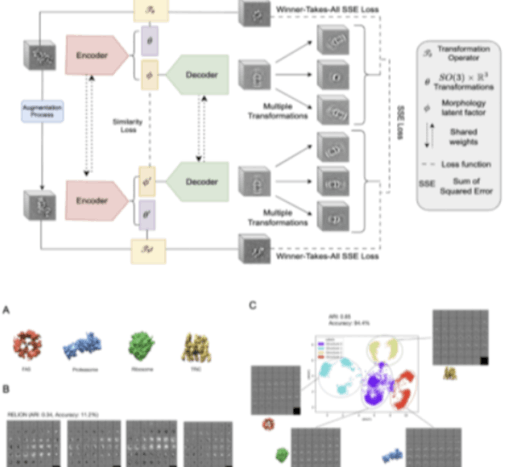

NeurIPS 2026 · Poster
DUIL: Deep Unsupervised Inverse Learning for in situ Macromolecular Morphology Identification
- Designed and trained an unsupervised autoencoder with a custom Multi-Choice Learning module that disentangles pose and semantic embeddings of protein structures.
- Outperforms RELION by 40% ARI on low-SNR Cryo-ET data.
- Identified a previously unresolved ATP synthase structure in the thylakoid membrane of yeast using this method.